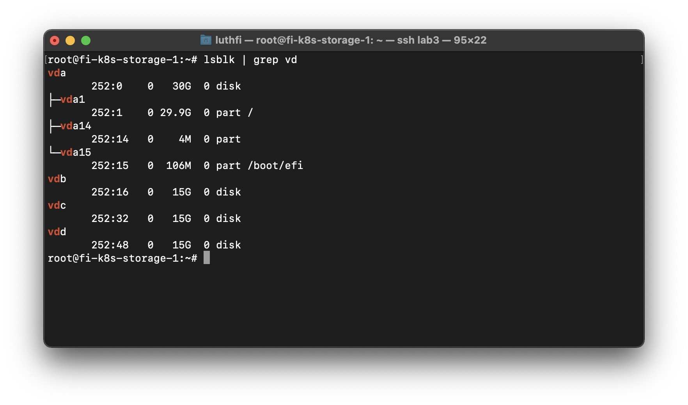
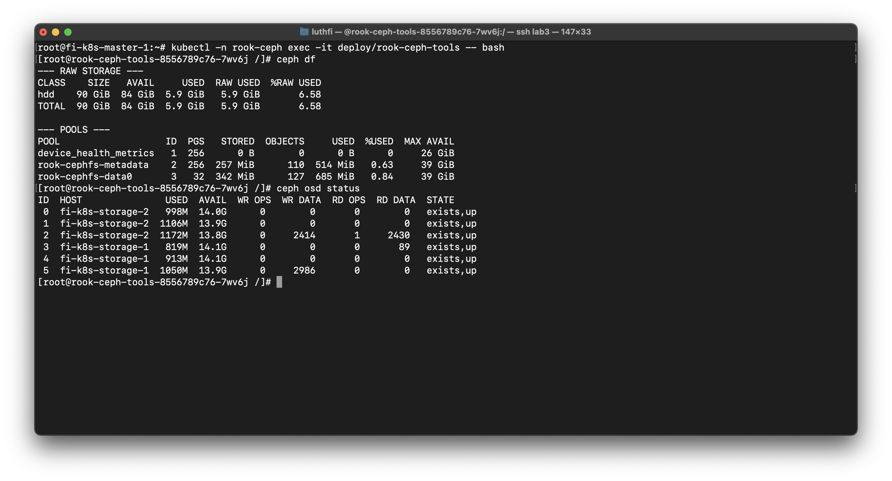
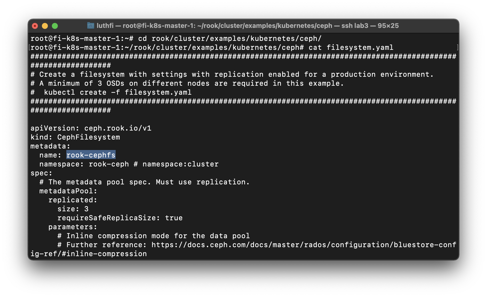
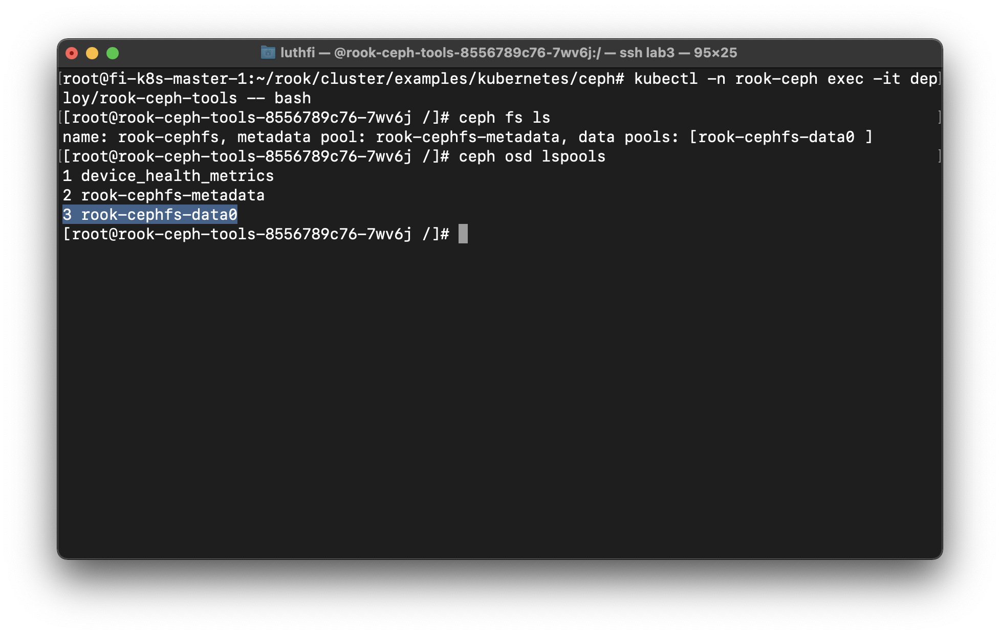
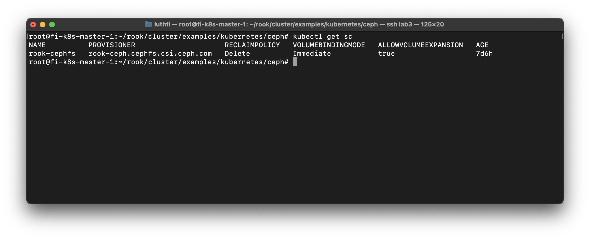
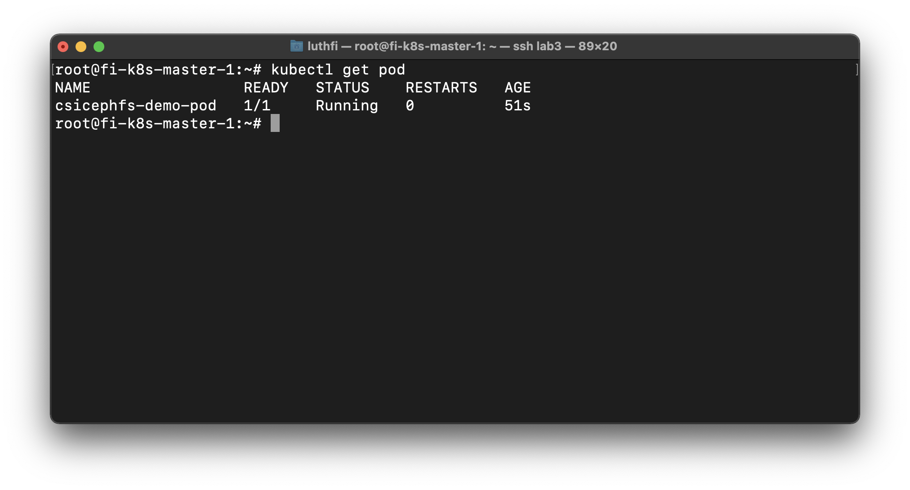

Deploy storage cluster ROOK with CEPH in Kubernetes
Specification : Kubernetes, ROOK, CEPH
Lab Topology
You can check installation kubernetes cluster in previous documentation, https://assyafii.com/docs/install-kubernetes-cluster-multi-master-ha/

Storages nodes disks
We use 3 disks extended (vdb, vdc, vdd) in each of storage-nodes, total 6 disks for rook cluster.
Detail disks


Master node
Clone ROOK Project
cd ~
git clone --single-branch --branch release-1.7 https://github.com/rook/rook.git
Deploy the Rook Operator
cd rook/cluster/examples/kubernetes/ceph
kubectl create -f crds.yaml
kubectl create -f common.yaml
kubectl create -f operator.yaml
Make sure all Rook components already UP

Verify the rook-ceph-operator is in the Running

Create a Ceph Storage Cluster
Set default namespace to rook-ceph, you can set to default namespace agaian after installation.
kubectl config set-context --current --namespace rook-ceph
Important : Expicitly define the nodes and raw disks devices to be used.
For any further customizations, check in ROOK Ceph Cluster CRD documentation.
sudo nano cluster.yaml

Deploy Rook ceph cluster
kubectl create -f cluster.yaml
Need some minutes to deploy it, make sure all completed
kubectl get -n rook-ceph jobs.batch
kubectl -n rook-ceph get cephcluster
Deploy Rook Ceph toolbox
The Rook Ceph toolbox is a container with common tools used for rook debugging and testing.
cd ~
cd rook/cluster/examples/kubernetes/ceph
kubectl apply -f toolbox.yaml
kubectl -n rook-ceph exec -it deploy/rook-ceph-tools -- bash
My cluster status CEPH Warning, because degraded data, but no problem.

All OSD UP 
Create pool shared filesystem in CEPH (cephfs)
cd ~
cd rook/cluster/examples/kubernetes/ceph/
sudo nano filesystem.yaml
Write your filesystem metadata name.

Verify if metadata and data pools are created. 
Create storage class for cephfs
sudo nano csi/cephfs/storageclass.yaml
kubectl create -f csi/cephfs/storageclass.yaml
kubectl get sc
change fsName & pool name
Verify storage class created 
Last step, Testing create PVC & POD
kubectl create -f csi/cephfs/pvc.yaml
kubectl get pvc
kubectl create -f csi/cephfs/pod.yaml
kubectl get pod
Example manifest file PVC
apiVersion: v1
kind: PersistentVolumeClaim
metadata:
name: cephfs-pvc
spec:
accessModes:
- ReadWriteOnce
resources:
requests:
storage: 1Gi
storageClassName: rook-cephfs
Example manifest file POD
apiVersion: v1
kind: Pod
metadata:
name: csicephfs-demo-pod
spec:
containers:
- name: web-server
image: nginx
volumeMounts:
- name: mypvc
mountPath: /var/lib/www/html
volumes:
- name: mypvc
persistentVolumeClaim:
claimName: cephfs-pvc
readOnly: false
Verify POD & PVC Already created
Persistent Volume

POD with PVC 
Reference :
https://computingforgeeks.com/how-to-deploy-rook-ceph-storage-on-kubernetes-cluster/